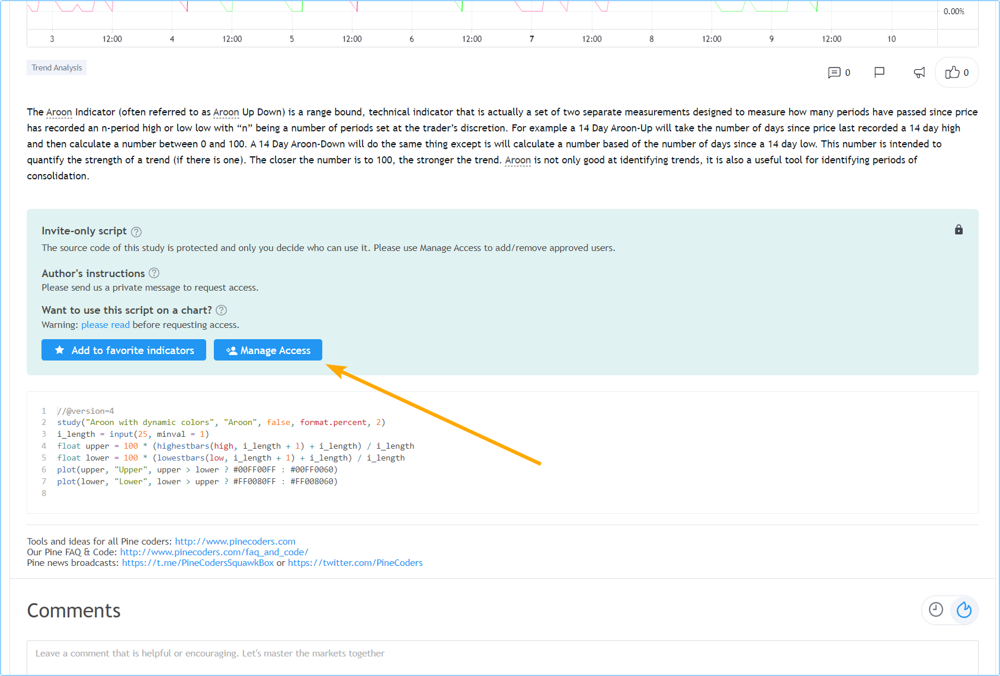
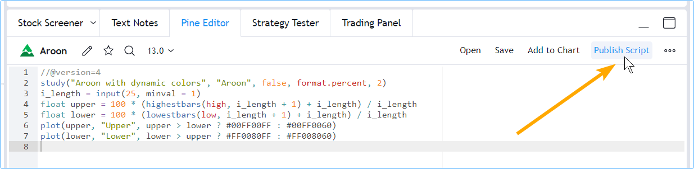
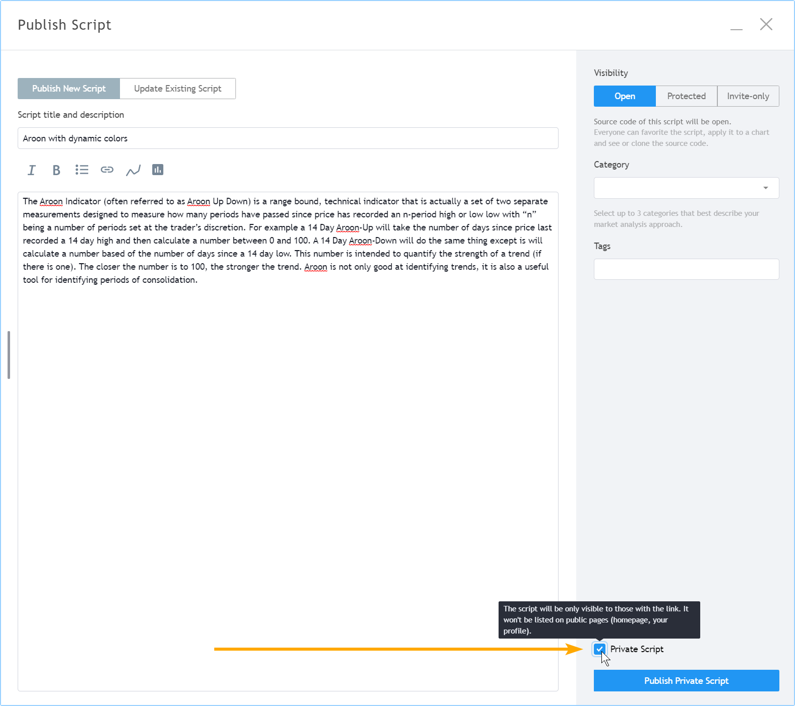
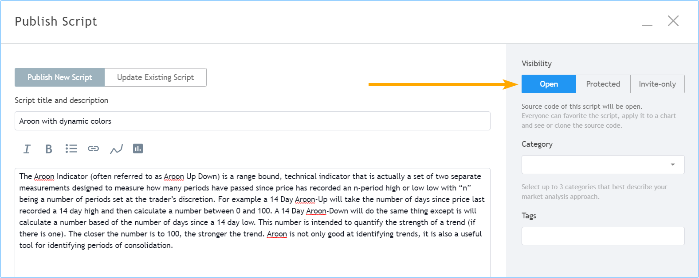
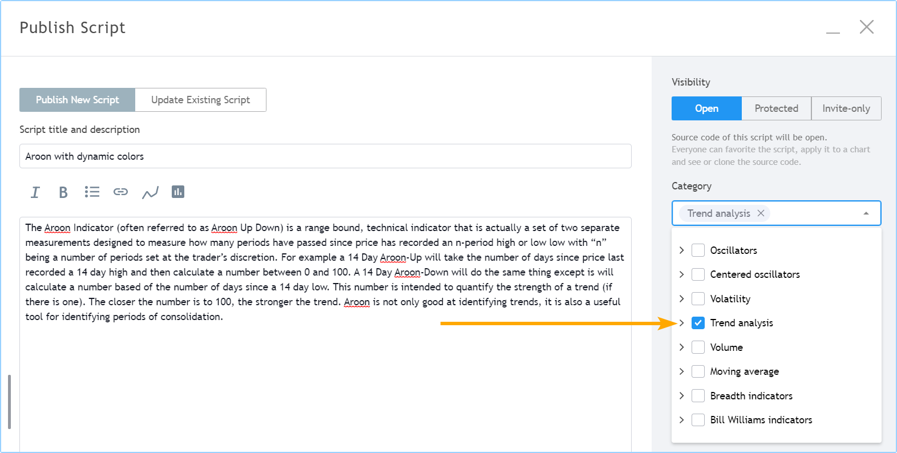
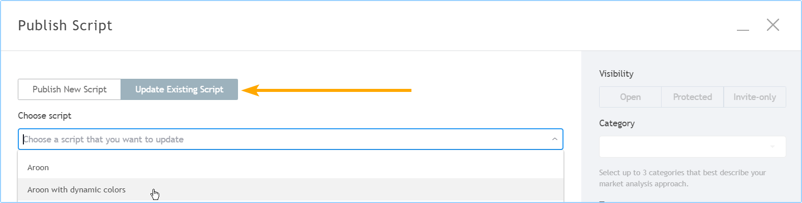
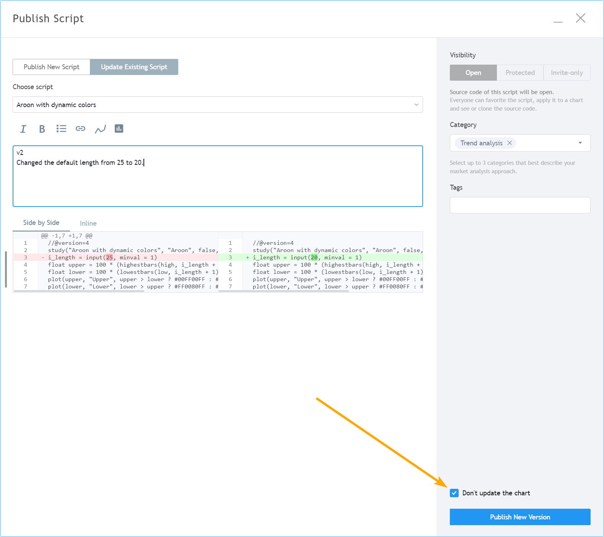

Publishing scripts¶
Programmers who wish to share their Pine scripts with other traders can publish them.
Note
If you write scripts for your personal use, there is no need to publish them; you can save them in the Pine Script® Editor and use the “Add to Chart” button to add your script to your chart.
Script visibility and access¶
When you publish a script, you control its visibility and access:
- Visibility is controlled by choosing to publish publicly or privately. See How do private ideas and scripts differ from public ones? in the Help Center for more details. Publish publicly when you have written a script you think can be useful to TradingViewers. Public scripts are subject to moderation. To avoid moderation, ensure your publication complies with our House Rules and Script Publishing Rules. Publish privately when you don’t want your script visible to all other users, but want to share it with a few friends.
- Access determines if users will see your source code, and how they will be able to use your script. There are three access types: open, protected (reserved to paid accounts) or invite-only (reserved to Premium accounts). See What are the different types of published scripts? in the Help Center for more details.
When you publish a script¶
- The publication’s title is determined by the argument used for the
titleparameter in the script’s indicator() or strategy() declaration statement. That title is also used when TradingViewers search for script names. - The name of your script on the chart will be the argument used for the
shorttitleparameter in the script’s indicator() or strategy() declaration statement, or the title argument in library(). - Your script must have a description explaining what your script does and how to use it.
- The chart you are using when you publish will become visible in your publication, including any other scripts or drawings on it. Remove unrelated scripts or drawings from your chart before publishing your script.
- Your script’s code can later be updated. Each update can include release notes which will appear, dated, under your original description.
- Scripts can be liked, shared, commented on or reported by other users.
- Your published scripts appear under the “SCRIPTS” tab of your user profile.
- A script widget and a script page are created for your script. The script widget is your script’s placeholder showing in script feeds on the platform. It contains your script’s title, chart and the first few lines of your description. When users click on your script widget, the script’s page opens. It contains all the information relating to your script.
Visibility¶
Public¶
When you publish a public script:
- Your script will be inluded in our Community Scripts where it becomes visible to the millions of TradingViewers on all internationalized versions of the site.
- Your publication must comply with House Rules and Script Publishing Rules.
- If your script is an invite-only script, you must comply with our Vendor Requirements.
- It becomes accessible through the search functions for scripts.
- You will not be able to edit your original description or its title, nor change its public/private visibility, nor its access type (open-source, protected, invite-only).
- You will not be able to delete your publication.
Private¶
When you publish a private script:
- It will not be visible to other users unless you share its url with them.
- It is visible to you from your user profile’s “SCRIPTS” tab.
- Private scripts are identifiable by the “X” and “lock” icons in the top-right of their widget. The “X” is used to delete it.
- It is not moderated, unless you sell access to it or make it available publicly, as it is then no longer “private”.
- You can update its original description and title.
- You cannot link to or mentioned it from any public TradingView content (ideas, script descriptions, comments, chats, etc.).
- It is not accessible through the search functions for scripts.
Access¶
Public or private scripts can be published using one of three access types: open, protected or invite-only. The access type you can select from will vary with the type of account you hold.
Open¶
The Pine Script® code of scripts published open is visible to all users. Open-source scripts on TradingView use the Mozilla license by default, but you may choose any license you want. You can find information on licensing at GitHub.
Protected¶
The code of protected scripts is hidden from view and no one but its author can access it. While the script’s code is not accessible, protected scripts can be used freely by any user. Only Pro, Pro+ or Premium accounts may publish public protected scripts.
Invite-only¶
The invite-only access type protects both the script’s code and its use. The publisher of an invite-only script must explicitly grant access to individual users. Invite-only scripts are mostly used by script vendors providing paid access to their scripts. Only Premium accounts can publish invite-only scripts, and they must comply with our Vendor Requirements.
TradingView does not benefit from script sales. Transactions concerning invite-only scripts are strictly between users and vendors; they do not involve TradingView.
Public invite-only scripts are the only scripts for which vendors are allowed to ask for payment on TradingView.
On their invite-only script’s page, authors will see a “Manage Access” button. The “Manage Access” window allows authors to control who has access to their script.

Preparing a publication¶
- Even if you intend to publish publicly, it is always best to start with a private publication because you can use it to validate what your final publication will look like. You can edit the title, description, code or chart of private publications, and contrary to public scripts, you can delete private scripts when you don’t need them anymore, so they are the perfect way to practice before sharing a script publicly. You can read more about preparing script descriptions in the How We Write and Format Script Descriptions publication.
- Prepare your chart. Load your script on the chart and remove other scripts or drawings that won’t help users understand your script. Your script’s plots should be easy to identify on the chart that will be published with it.
- Load your code in the Pine Editor if it isn’t already. In the Editor, click the “Publish Script” button: 
- A popup appears to remind you that if you publish publicly, it’s important that your publication comply with House Rules. Once you’re through the popup, place your description in the field below the script’s title. The default title proposed for your publication is the
titlefield from your script’s code. It is always best to use that title; it makes it easier for users to search for your script if it is public. Select the visibility of your publication. We want to publish a private publication, so we check the “Private Script” checkbox at the bottom-right of the “Publish Script” window:  - Select the access type you want for your script: Open, Protected or Invite-only. We have selected “Open” for open-source. 
- Select the appropriate categories for your script (at least one is mandatory) and enter optional custom tags. 
- Click the “Publish Private Script” button in the lower-right of the window. When the publication is complete, your published script’s page will appear. You are done! You can confirm the publication by going to your User Profile and viewing your “SCRIPTS” tab. From there, you will be able to open your script’s page and edit your private publication by using the “Edit” button in the top-right of your script’s page. Note that you can also update private publications, just like you can public ones. If you want to share your private publication with a friend, privately send her the url from your script’s page. Remember you are not allowed to share links to private publications in public TradingView content.
Publishing a script¶
Whether you intend to publish privately or publicly, first follow the steps in the previous section. If you intend to publish privately, you will be done. If you intend to publish publicly and are satisfied with the preparatory process of validating your private publication, follow the same steps as above but do not check the “Private Script” checkbox and click the “Publish Public Script” button at the bottom-right of the “Publish Script” page.
When you publish a new public script, you have a 15-minute window to make changes to your description or delete the publication. After that you will no longer be able to change your publication’s title, description, visiblity or access type. If you make an error, send a message to the PineCoders moderator account; they moderate script publications and will help.
Updating a publication¶
You can update both public or private script publications. When you update a script, its code must be different than the previously published version’s code. You can add release notes with your update. They will appear after your script’s original description in the script’s page.
By default, the chart used when you update will replace the previous chart in your script’s page. You can choose not to update your script page’s chart, however. Note that while you can update the chart displayed in the script’s page, the chart from the script’s widget will not update.
In the same way you can validate a public publication by first publishing a private script, you can also validate an update on a private publication before proceeding with it on your public one. The process of updating a published script is the same for public and private scripts.
If you intend to update both the code and chart of your published script, prepare your chart the same way you would for a new publication. In the following example, we will not be updating the publication’s chart:
- As you would for a new publication, load your script in the Editor and click the “Publish Script” button.
- Once in the “Publish Script” window, select the “Update Existing Script” button. Then select the script to update from the “Choose script” dropdown menu: 
- Enter your release notes in the text field. The differences in your code are highlighted below your release notes.
- We do not want to update the publication’s chart, so we check the “Don’t update the chart” checkbox: 
- Click the “Publish New Version” button. You’re done.